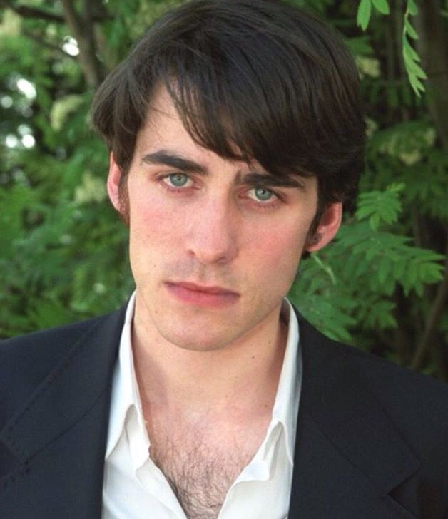
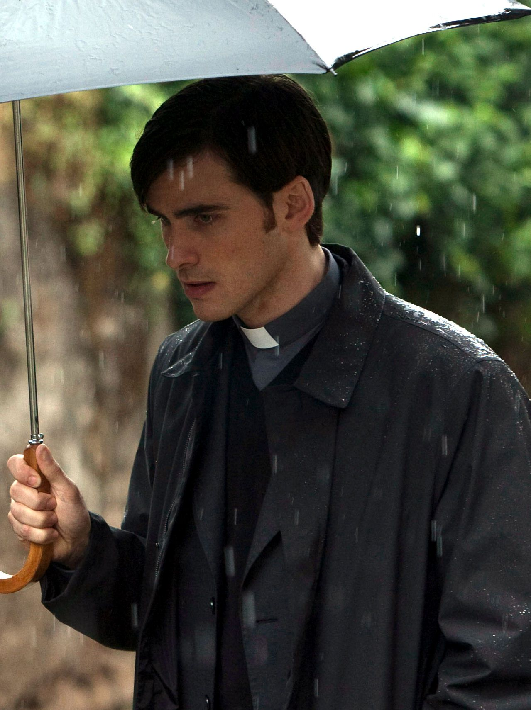

He is an Irish actor and musician
콜린은 아일랜드의 배우이자 뮤지션이다!
Colin Arthur O'Donoghue was born 26 January 1981.
콜린 아서 오도노휴는 1981년 1월 26일에 태어났다.
his height is 178 cm (5 ft 10 in)
콜린의 키는 178cm이다!분명히 180cm였는데..?
Coln is the son of Con and Mary O'Donoghue, was born and raised in Drogheda, County Louth, in a Roman Catholic family.
콜린은 콘과 메리 오도노휴의 아들로, 가톨릭 가정에서 루스 주의 드로게다에서 태어나 자랐다.가톨릭이어서 더 끌린다
He has an older brother named Allen, and he is the cousin of musician Harry O'Donoghue.
콜린에겐 앨런이라는 형이 있고, 음악가 헨리 오도노휴의 사촌이다.
He attended Dundalk Grammar School, and later The Gaiety School of Acting in Dublin.
그는 던달크 문법 학교를 졸업하고 더블린에 있는 게이어티(gaiety) 연기 학교를 다녔다.
At age 16,he went to Paris for a month to learn French.
16살 때는 프랑스어를 배우기 위해 한 달 동안 파리로 갔다.뇌섹남

젊을때다..
Colin was part of the five-piece Irish band, "The Enemies".
콜린은 아일랜드 밴드 "디 에나미"의 5명의 멤버 중 하나였다.
"디 에나미"는 콜린의 친한 친구 로난 맥퀼라가 2003년에 만들었다.
The Enemies released their self-titled debut EP on 7 March 2011 prior to their self-funded first album on track."디 에나미"는 2011년 3월 7일에 자체타이틀 데뷔 EP를 발표했다.
He played guitar and sang backing vocals on the band's first EP and debut album.콜린은 밴드의 첫 EP와 데뷔 앨범에서 기타랑 서브보컬이었다!

In 2003, he won the Irish Film and Television Award for "Best New Talent" for his role as Norman in "Home For Christmas".
2003년, 그는 "Home For Christmas"에서 노먼 역을 맡아 "Best New Talent"로 아일랜드 영화 및 텔레비전 상을 수상했다.
He appeared in the 2011 horror thriller film The Rite (2011) as a sceptical novice priest, Michael Kovak.
콜린은 2011년 공포 영화 The Rite(2011)에서 신앙심이 없는 신학생 "마이클 코박"으로 출연했다.

But also best known for portraying Captain Killian Jones on the "Once Upon a Time".
하지만 "원스 어폰 어 타임"의 더티 섹시"킬리언 존스"로 가장 잘 알려져 있다!
*윗 문서의 Killian Jones 참조*
크리스티나 페리는 킬리언을 위해 "The Words"를 썼다!웃긴건 댓글엔 죄다 콜린덕질러들만 썼는지 잘생겼단 내용밖에 없다..
결혼도 했다! 2009년에 "헬렌 오도노휴"랑 결혼 했다고 한다!

무엇보다 아직까지도 연기한다! 물론 아일랜드에서..(또륵..)